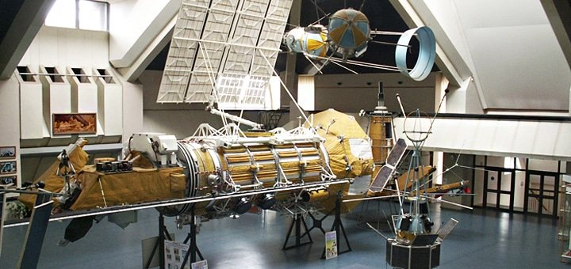
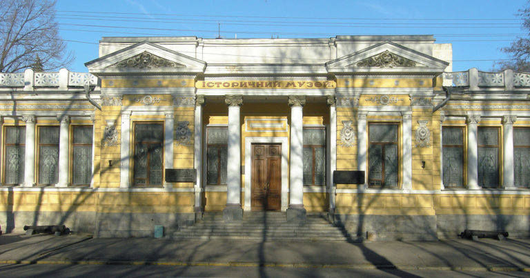
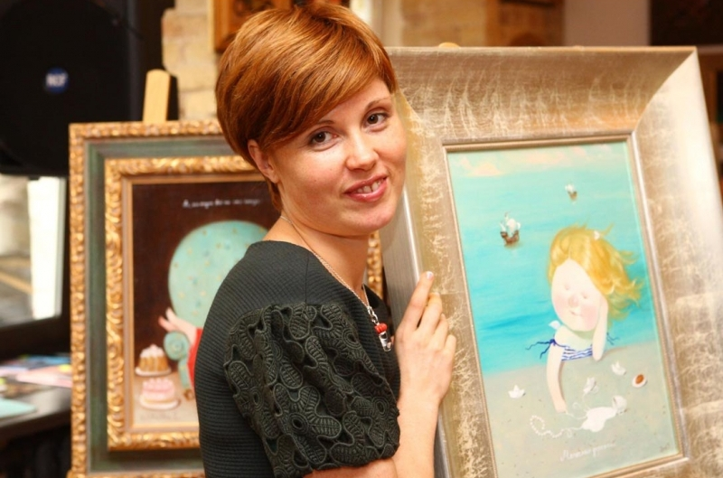
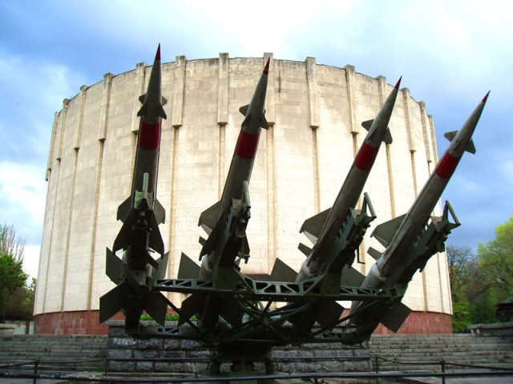
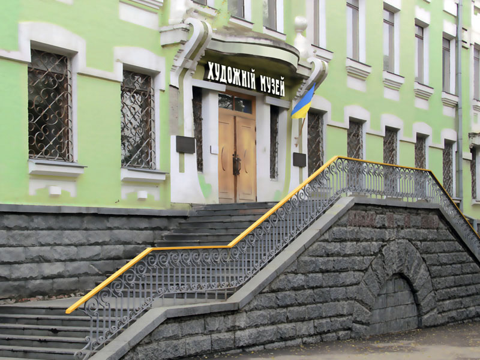
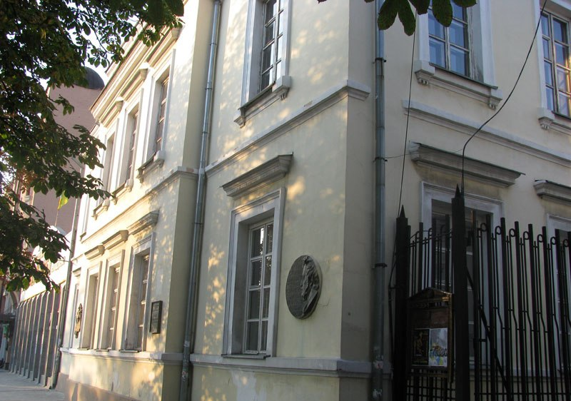
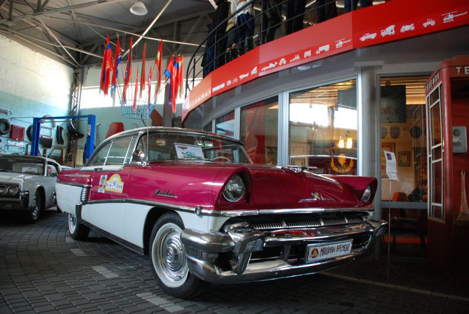
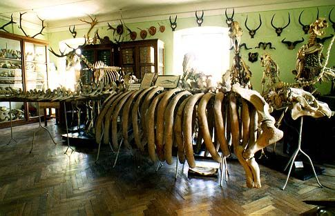
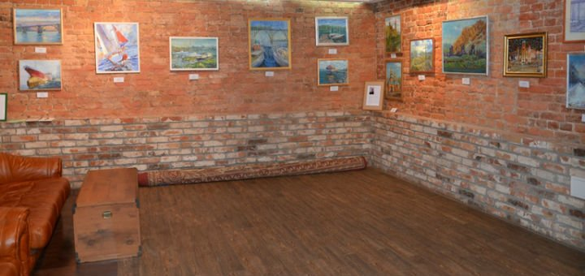
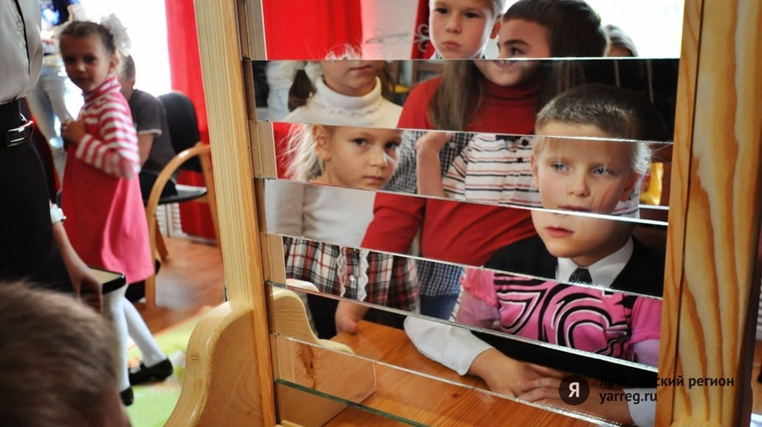

Аэрокосмический Музей

Аэрокосмический Музей — самый популярный музей Днепра. Сюда едут со всей Украины узнать много интересной информации о жизни космонавтов, посмотреть на образцы ракет. Здесь на открытой площадке стоят настоящие ракеты, которые, конечно, будет
интересно посмотреть и взрослым, и детям. Кроме того, здесь есть личные вещи космонавтов, одежда, тюбики с едой.
В музее от посетителей нет прохода. Записываться на экскурсию следует заранее. Экскурсия длится примерно 2 часа, она интересная и увлекательная.
Исторический Музей имени Д. И. Яворницкого

Один из самых интересных исторических музеев в Украине! Коллекция музея была лично собрана Д. И. Яворницким, любителем и ценителем древности и истории. В экспозиции музея огромное количество интересных исторических объектов, многие из которых,
были привезены из других стран. Много выставочных залов, хорошие экскурсоводы, влюбленные в свое дело и свой музей, — здесь вам точно понравится!
Один из самых интересных объектов, представленных в коллекции, — старинная карета.
Музей Евгении Гапчинской

Евгения Гапчинская — одна из самых популярных художниц Украины! Ее милые ангелочки покорили всех! Интересно, что Евгения родом из Днепра, а училась в Харькове. В Днепре следует посетить ее музей, где представлены ее самые интересные работы.
Сама художница называет себя «Постащиком счастья №1». Ее работы покупают украинские знаменитости, российские знаменитости и даже Лучано Паваротти.
Диорама «Битва за Днепр»

Сюда следует идти всем любителям истории ВОВ. В 1975 г. была открыта диорама «Битва за Днепр». Она воспроизводит военные действия, которые проходили на территории Днепра с интересными, в том числе, музыкальными спецэффектами. Считается самой
большой диорамой в Украине и второй в Европе. Она является частью мемориального комплекса.
Художественный музей

Один из самых старинных музеев Днепра. Музей изначально назывался Екатеринославская картинная галерея, и была открыта в 1914 году. Сегодня туристы здесь могут увидеть около 9000 интересных работ: это и картины, и скульптуры, и графика. Здесь
представлена живопись, иконопись. Есть картины великих гениев художественного искусства: Репин, Айвазовский, Куинджи.
Также в музее проводятся выставки петриковских мастеров народной росписи.
Музей Литературное Приднепровье

Музей Литературное Приднепровье — это один из филиалов Исторического Музея им. Д. Яворницкого. Музей открыли в мае 1998 года в старинном здании Доме Инзова. Особняк помнит таких великих гениев литературы, как А. Пушкин, М. Светлов. Здесь также
находилось Литературно-артистическое общество им. Н. В. Гоголя.
Музей ретро-мобилей

Новый интересный музей ретро-автомобилей будет интересен и мужчинам, и женщинам. Его еще называют «Машины времени». Здесь представлены советские автомобили и американские автомобили.
Музей открыли в 2014 году. Его основателем считается М. Прудников, которые многие годы до открытия музея начал собирать свою коллекцию. Музей ретро-мобилей был открыт вторым в Украине после своего «брата» в Запорожье.
Зоологический музей

Зоологический музей ДНУ считается одним из самых старых города. Музей создал Д. И. Яворницкий, который был известным этнографом, краеведом, археологом. Его открыли в 1901 году. На 570 метров находится интересная экспозиция скелетов и чучел
разных представителей царства животных.
Картинная галерея Telega

Галерея современного искусства находится в центре Днепра. Здесь можно посмотреть на картины современных украинских художников. В галерее проводятся выставки художников, различные кинофестивали, а также литературные вечера. В галерее можно
купить картины, багеты, рамы, зеркал. Картинная галерея была открыта в 2001 году.
Музей занимательной науки

Самый необычный музей в Днепре! Каждый день с 10.00 до 20.00. Здесь проводятся интересные экскурсии. Также можно принять участие научном шоу. Главная фишка музея — в его интерактивности.
Конечно, не все музеи Днепра представлены в статье. Здесь вы найдете идеи, какие музеи можно посетить, приезжая в Днепр.